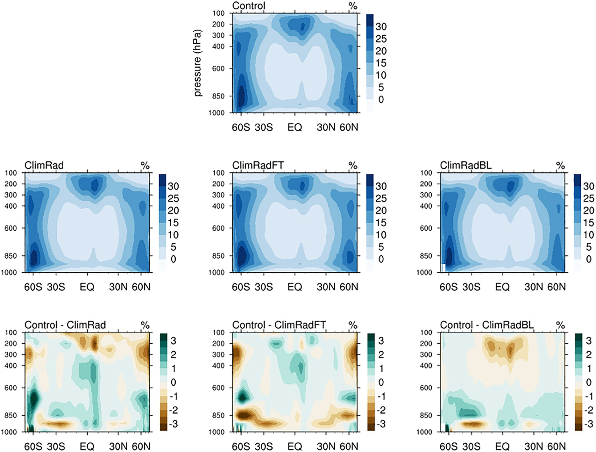
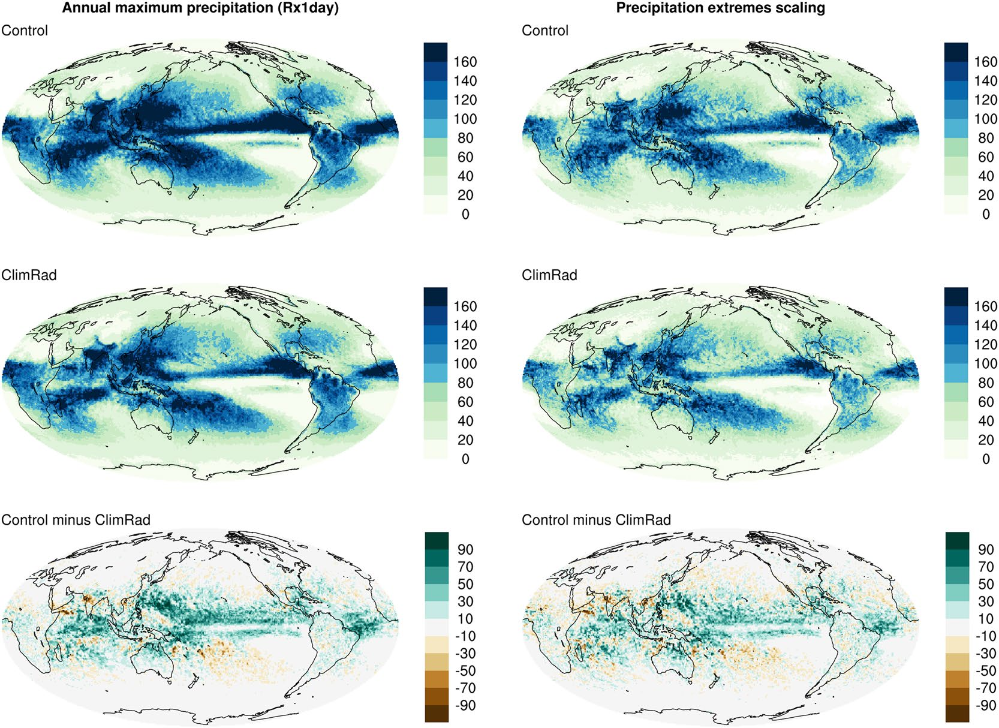
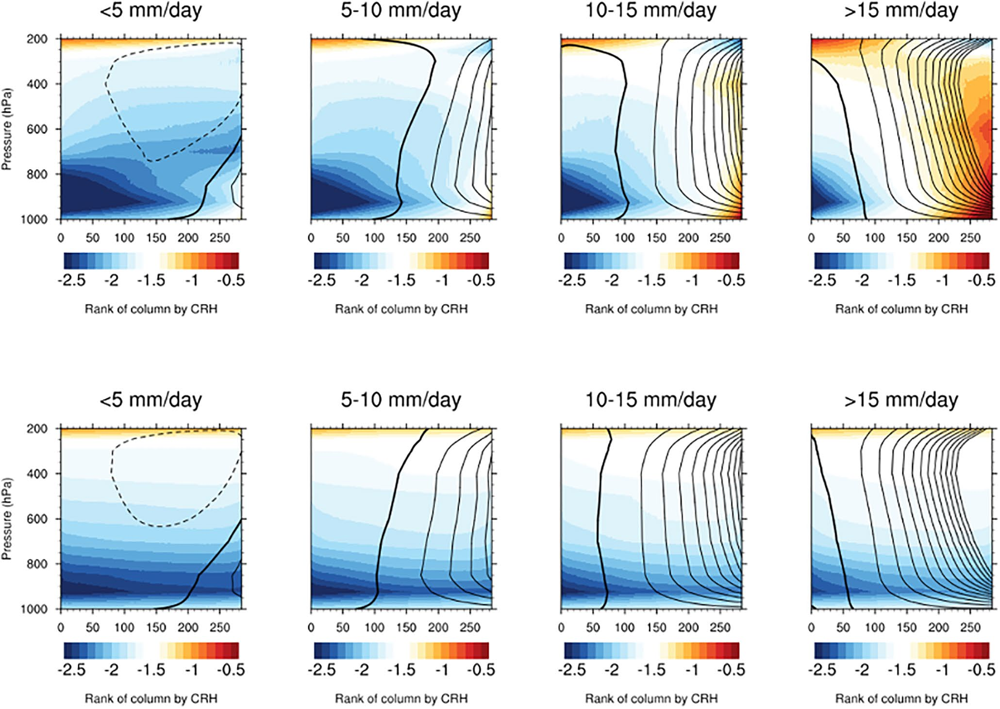

~50 km
Horizontal resolution of the atmospheric GCM experiments
Journal of Advances in Modeling Earth Systems (2021)
Mechanism-denial experiments demonstrate that synoptic radiative interactions enhance convective aggregation and intensify tropical precipitation extremes under realistic forcing.
~50 km
Horizontal resolution of the atmospheric GCM experiments
50 Years
Simulation length with prescribed climatological SST and sea ice
ClimRad / FT / BL
Layer-selective radiative-coupling denial isolates mechanism pathways
Paper Citation
Zhang, B., B. J. Soden, G. A. Vecchi, and W. Yang, 2021: Investigating the Causes and Impacts of Convective Aggregation in a High Resolution Atmospheric GCM. Journal of Advances in Modeling Earth Systems, 13, e2021MS002675. https://doi.org/10.1029/2021MS002675
How do synoptic-scale interactions between radiation and dynamics influence convective aggregation, cloud-humidity structure, and tropical precipitation extremes under realistic boundary conditions?
Extracted from Zhang et al. (2021), JAMES, https://doi.org/10.1029/2021MS002675.
Figure A

Figure B

Figure C

This study targets tropical convective organization and extreme rainfall mechanisms. While not a dedicated tropical-cyclone simulation paper, its radiation-convection coupling diagnostics are directly relevant to understanding how mesoscale organization can influence tropical weather extremes.